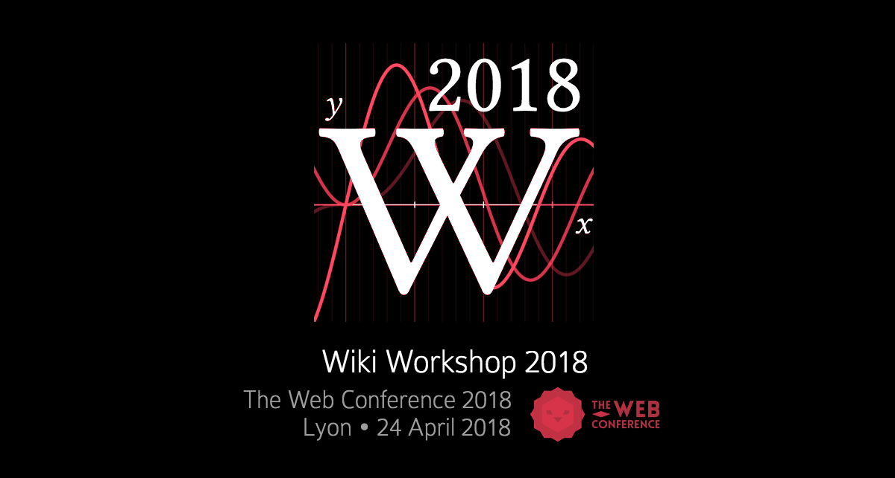

Events
Events we run
We run the following event series, devoted to furthering and disseminating scholarship around Wikimedia projects and open collaboration.
Wiki Workshop
Wiki Workshop is the annual wikimedia research forum hosted at a major scholarly conference, bringing together researchers exploring all aspects of Wikipedia and other Wikimedia projects.
Wikimedia Research Showcase
The Wikimedia Research Showcase is a monthly public showcase of recent research by Research team members, collaborators, and guest presenters from the scholarly research community.

WikiCite
The WikiCite Conference is an annual conference that brings together librarians, data modelers, Wikimedia contributors, software developers, and open data stakeholders to develop a collaborative knowledge base of source and citation metadata to serve free knowledge projects.

Events we attend
We regularly attend, present, and publish our work at scholarly research conferences, as well as community hackathons and events within the Wikimedia Movement. The most common venues for our work are the following:
- CSCW: ACM Conference on Computer-Supported Cooperative Work and Social Computing
- CHI: ACM Conference on Human Factors in Computing Systems
- ICWSM: AAAI International Conference on Web and Social Media
- WWW: The Web Conference
- Wikimania: the Wikimedia Foundation annual conference
- Wikimedia Hackathon: the Wikimedia Foundation Annual Hackathon